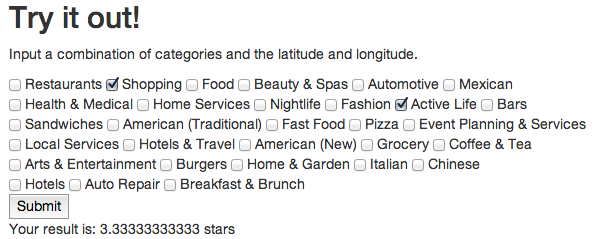

Every month, over half a million new businesses open in the US. Business owners have to decide where their businesses will be most popular. What if they could determine the online presence of their businesses based on actual data rather than trying to guess for themselves? The Yelp DataSet has a rich base of user ratings for various businesses. Using this data, we propose training different classifiers to predict the rating (number of stars) for a potential business prototype given categories and locations.
You can try our predictions out for yourself by going to our interactive visualization page. You can choose categories and click on the map to get a location. Every time you click submit, our backend python code will use our implementation of K-Nearest Neighbors (not scikit learn's) to calculate a rating for the business you described.
We believe that there is a correlation between a business' features (specifically categories and location) and how popular it will be.Our hypothesis is that we can succesfully predict a business' rating using different classfiers. Furthermore, we believe that this problem is well-suited for using a KNN-classifier to succesfully predict popularity. We planned to compare and contrast different classifiers. We measured success by seeing how accurate they are on the businesses we have in the Yelp Dataset. Although we were initially planning on using precision and recall, we disregarded them as we found better measures of accuracy.
We used information from 15,558 businesses to build, train, and test our classifiers. The goal was to predict the success of a potential business. We defined this popularity by estimating its ratings. The training data used was a corpus of businesses with locations, categories, and number of ratings. Our feature space was multi-dimensional based on the number of categories as well as the locations. We experimented using different classifiers. For all of them, we found nearby businesses to our test business (nearby meaning within a certain range of latitude and longitude) and then trained our classifiers with that data or used some sort of heuristic (in the case of MLE and KNN) to estimate the rating. In order to measure our accuracy, we assigned all the businesses a test id (we divided data into ten groups). When we were trying to predict the results from an input set, we did not fetch any nearby businesses that had the same test id. We did this in order to prevent over-fitting to our data sets.
This project involved several separate components. We first had to build a database to hold the relevant information. We then used several different classifiers to predict the number of stars. We separated data into ten parts (all with a certain test id). In measuring our performance, we ran our code on every single within the business.json file. In order to train our classifiers, we considered all the businesses within a certain range of the latitude and longitude of each business. We only used data that did not have the same training id as the one we were currently considering. We then passed in the categories of the test business as features to the trained classifier and had it predict ratings. From the prediction, we were able to measure average error rate.
Our starting point was the data from the yelp dataset, which contained information about a business in a json format. We parsed through the file and added information to a sqlite database so that it contained the name, latitude, longitude, categories, rating (or stars), and test id. There were several reasons to store this information in a database: the first being that we needed to load this information so that it could be used multiple times by many different files (different implementations). Also, storing this information in the database meant we could quickly query it by certain parameters (mainly the latitude and longitude and the test_id). Finally, we used the database to store the test id which we assigned to each business. This was similar to cross-validation because when we trained our classifiers, we did not use businesses that had the same test id as our input business.
Once we had our database, we were able to use it in six different classifiers: MLE, KNN and the scikit learn implementions of NB, Log, SVM, and KNN.
Our maximum likelihood estimator simply took an average of all the businesses within a certain range of the input latitude and longitude that had at least one category in common with the input categories. The MLE works by finding the results that seem most probable. In this case, we are estimating the ratings. In our implementation, we simply queried the database to get all valid (i.e. those that didn't have the same test id) businesses and filtered out those that did not have at least one category in common with the input list of categories. We then took the average rating as our prediction for number of stars.
Our home-made KNN classifier performed the best out of all the techniques described. It worked similar to MLE at first: we queried the database for the businesses within a certain region. Then we made a dictionary of each of the nearby businesses and the number of categories it had in common. We sorted this list and took the top 30 neighbors (this was the parameter we found worked best). In this case, our distance measure is based on overlap. We used this list of businessses and three different heuristics (described below) to calculate a prediction. Further exploration could involve coming up with different metrics of both distance and how to use the top neighbors.
We used the following four classifiers from the sci-kit learn implementation. It is important to note that none of these classifiers were as good as our own implementation of KNN with a weighted heuristic.
Naive Bayes is called "naive" because it assumes that each feature is independent of the others. This falls into the category of a generative model because it estimates probabilities of features and seeing the data given a certain category.
Logistic Regression works by prediciting a label that is categorically dependent, meaning that it depends on the presence of certain features. Unlike Naive Bayes, Logistic Regression does not assume that features are independent and therefore does not have the problem of over-weighting correlated features. This is a discriminative model becauase it estimates directly the probability of a category given the data. In our implementation, we used the scikit class sklearn.linear_model.Logistic Regression with the parameter option of dual=False, which decreased error rate by 1%. This is used when the number of samples > number of features.
Support Vector Machine directly estimates the category from the data. An SVM separates the data into different parts by finding the hyperplane that can divide it or by transforming the data into a higher dimension and using a separating hyper plane in that space (also known as the kernel trick).
K Nearest Neighbors The idea behind KNN is the same as the one we implemented above. However, the sci-kit learn implementation differed in a few ways that made it perform worse than our implementation. To begin with, we used sci-kit learn KNN with a uniform weight distribution for all the neighbors. This is because making it weight based on distance made it perform worse since it looks at a distance measure that incorporates the order of categories (which it should not as categories are essentially just bag of words). The advantage of the sci-kit learn implementation is that it can return probabilities of being in a certain class, which is useful in calculating the expected value.
We primarily measured accuracy by looking at the average percent error. That is, we calculated percent error for each business by doing (actual-predicted)/actual. We summed up the absolute values of this and divided by the number of businsesses (not necessarily the number in the test set, since some businesses were not similar to any others nearby) and were able to find an average error rate. Though we calculated precision and recall for all the classifiers as well as a confusion matrix, we found that it was not as enlightening mainly because there were so many different categories that this could fall into. Also, the precision and recall does not consider closeness whereas average error rate does. For example, if a business actually had 4 stars but a classfier estimated it as having 3, then this would be considered just as bad as estimating it as having .5 stars. Our precision and recall rates were fairly low for all the classifiers, around 20-40%.
We found that it greatly improved accuracy to do an expected value calculation rather than just simply take a classifiers label. For example, the sci-kit learn classifiers such as log, svm, and nb all have predict and predict probability functions. The former returns a label and the latter returns an array of probabilities of being that category. In order to get a closer prediction, we took the dot product of the probabilities and an array of labels, which gave a number much closer to the average. This decreased average error rate by 4%.
We also were able to improve the accuracy of the classifiers by writing scripts to find the best parameters for the model. The main parameters to decide on were the latitude and longitude range (and K in the case of KNN).We found that increasing the range was generally helpful, but that was because it was finding a large number of businesses. The YelpAcademic Dataset is mostly centered in the Arizona area and only has 15558 businesses. When we increased the latitude and longitude range to .2, we were fetching nearly 5000 businesses, almost a third of the dataset. Obviously increasing data would improve our accuracy, but this came at the cost of losing the ability to say anything meaningful. We settled on a range of .05, which was retrieving an average of 100 or so nearby businesses and only 271 (or 1.7%) of all businesses could not be classified because there were no relevant businesses in the area.
Below are the reports for the average error rate
Overall, we were able to predict fairly well the rating stars. We found it absolutely necessary to include information about the location-simply using categories as features increased our error rate by 25% (to nearly a 50% error rate in some cases). Looking at our visualization on the other page, it is easy to see that most of our predictions are very close. Furthermore, a 20% average error rate on a 5-star scale means we are off by on average 1-star (or less). This is still a very good estimate.
Although are estimates were good, this discrepancy could be explained. We mainly looked at overlap between categories and the location, so it makes sense that though these businesses might be similar, there rankings could differ. For exampe, if there is an excellent Italian restaurant on Main Street, customers might review a similar restaurant a couple blocks away poorly because the niche for the market was filled or that one business looks worse by comparison. It is definitely important to consider that though similarity can provide a good estimate, it does not provide a complete picture of the fact that these businesses will compete with each other.
In conclusion, we were mostly able to validate our hypothesis. We had hoped to succesfully predict the ratings of a business using various classifiers and we were able to do so. In fact, we were more succesful when we built our own classifiers than using sci kit learns. Though we have a fair amount of error (by about 1 star), we can still estimate quite well the number of stars of a business given location and categories.
We built several visualizations to help convey the results of our project. We wanted the user to be able to glance at the screen and immediately glean useful information about the success rates of businesses in a given area. To do this, we used the google-maps api to create a heat map for the businesses in the dataset (we based our visualization on this tutorial). Businesses are represented as circles on the map, with each cirlce's radius indicating the actual rating of that business and the lightness of each circle indicating the magnitude of the difference between our prediction and the actual. (Darker is better!)
When the user hovers over a given business, a tooltip giving the name of the business, the actual business rating, and our predicted business rating pops up. The left and center images (above) depict hovering over two different business. "La Tolteca Mexican Foods" has a large circle because it gets a high rating and is dark because our prediction is very close to the actual. "China Inn", on the other hand, has a small cirlce because it has only 2 stars and is light in color because our prediction is rather far off.
The second component of the visualization allows the user to experiment with different business locations and categories. By clicking on the map, the user puts down a pin (see rightmost image) that records the latitude and longitude information of that location. The user can also select the categories that he or she wants for the business. When the user hits select, we query our backend (using our home-built KNN classifier) and return the predicted rating for a hypothetical business with those categories in that location.